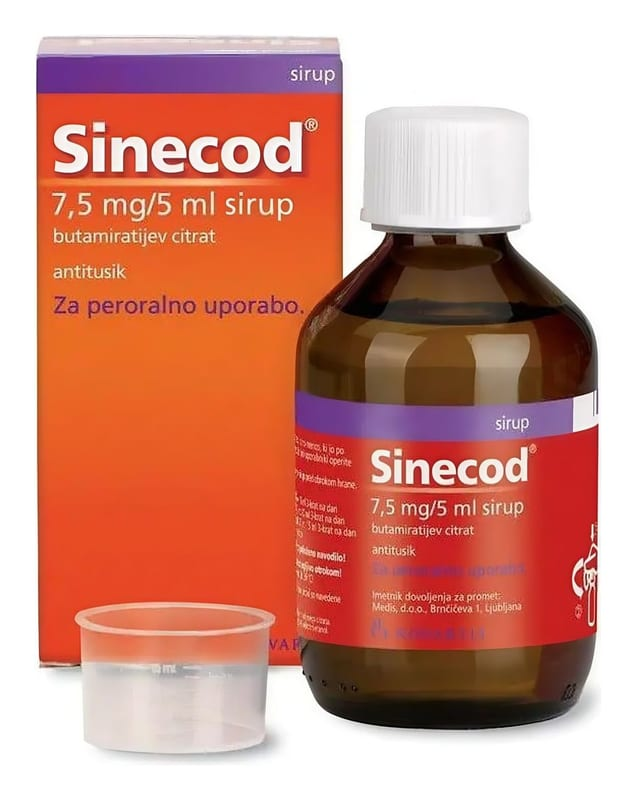

Sinecod 1,5 mg /ml Şurup

Ne için kullanılır
KT · Bölüm 1• SİNECOD etkin madde olarak butamirat sitrat içeren, şurup formunda bir ilaçtır. • SİNECOD, “öksürük baskılayıcı ilaçlar” olarak adlandırılan bir ilaç grubuna dahildir. • SİNECOD şurup, çocuk korumalı kapaklı, amber renkli 100 ml’lik şişelerde, 5 ml’lik dereceli ölçü kaşığı ile birlikte kullanıma sunulmaktadır. • SİNECOD çeşitli nedenlerden kaynaklanan öksürüğün şikayetlere yönelik (semptomatik) tedavisinde kullanılır.